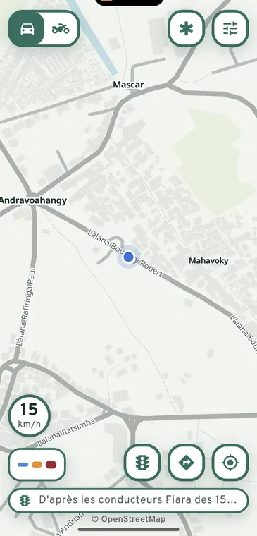
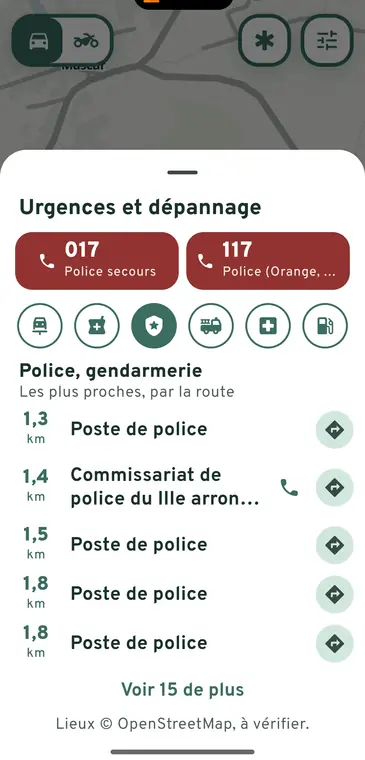
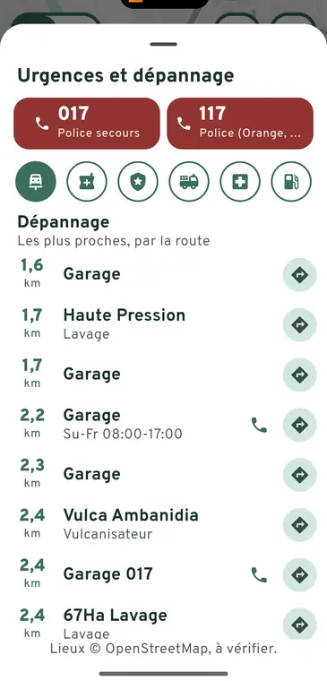
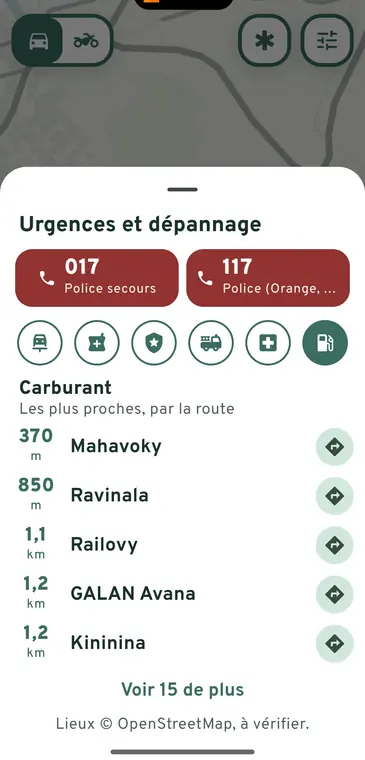
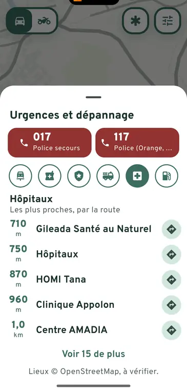
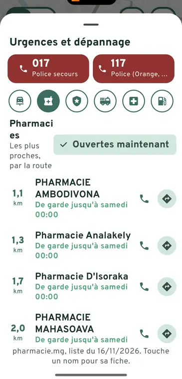

0.2.6
Virages interdits respectés dans les itinéraires ; ta voiture reconnue par son autoradio.
 F-iara
F-iara
Itinéraires, places, urgences et pharmacies de garde, en voiture ou à moto. Gratuite, sans compte, sans publicité.






Téléphone ancien ou d'entrée de gamme ? Prends cette version-ci. Ensuite l'app se met à jour toute seule.
F-iara montre parkings, dépanneurs et services aux conducteurs de Tana au moment précis où ils en ont besoin.
En tête de « Où me garer ? », avec vos tarifs et vos horaires. L'app guide le conducteur jusqu'à votre entrée.
En tête de « Urgences et dépannage » : votre numéro à un toucher, au moment d'une panne ou d'un pneu crevé.
« F-iara avec votre marque » dans l'app et sur ce site. Un seul sponsor à la fois.
Toujours marqué « Partenaire » dans l'app. Les trois premiers partenaires : premier mois offert.
Carte et guidage sont dans le téléphone. Un bouchon devant ? F-iara propose un autre chemin.
Gare-toi et descends : F-iara retient l'endroit toute seule et t'y ramène à pied.
245 parkings, les plus proches dans ton sens de circulation, à 1 km en voiture.
Police, gendarmerie, hôpitaux et garages les plus proches par la route. Un toucher compose le numéro.
La liste change chaque semaine ; F-iara se met à jour seule. La nuit, seules celles de garde restent.
Les conducteurs F-iara partagent la vitesse rue par rue, anonymement. Tana s'allume axe par axe.
Aucun compte. Ta position reste dans ton téléphone ; si tu aides le trafic, seule une vitesse par rue part, jamais ton trajet. Tu choisis d'aider ou non, et tu peux arrêter à tout moment.